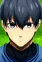
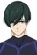
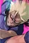
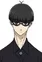

Blue Lock vs. U-20 Japan
Score: 6.75 Ranked: #5517 Popularity: #1302 Members: 192,712
Synopsis
The next phase of the controversial Blue Lock project is underway with the candidate pool being dwindled down to just 35. Out of the remaining strikers, only a select few will be chosen to play in an upcoming exhibition game against the current U-20 Japanese soccer team. Playing in this match comes with a caveat: winning will grant the players the right to represent the nation as the new U-20 team, but losing will bring an end to Blue Lock in its entirety. Among the ones left in the running is Yoichi Isagi, who is coming to terms with his own abilities. To further complicate matters, the six best players in the pool have already been named to the starting lineup and the remaining 29 will have to duke it out to claim a coveted spot. Each candidate must select a top six pairing to team up with for the selection to prove their competence. But if this mishmash of strikers wants to overthrow the current U-20 team, they will need to find a way to combine their playstyles effectively.
Background
Blue Lock vs. U-20 Japan aired on TV Asahi's IMAnimation block.
Information
- Type: TV
- Episodes: 14
- Status: Currently Airing
- Aired: Oct 6, 2024 to ?
- Producers:TV Asahi, Lantis, Kodansha, Toy's Factory, Crunchyroll, Chiptune, Bandai Spirits, Bit grooove promotion, Bandai Namco Filmworks, Bandai Namco Music Live
- Genres: Sports
- Duration: 23 min. per ep.
- Rating: PG-13 - Teens 13 or older
Characters & Voice Actors
|  Isagi Yoichi Main -> Voiced by- Ura, Kazuki |  Itoshi Rin Supporting -> Voiced by- Uchiyama, Kouki | ||
|  Shidou Ryuusei Supporting -> Voiced by- Nakamura, Yuuichi | Nagi Seishiro Supporting -> Voiced by- Shimazaki, Nobunaga | Itoshi Sae Supporting -> Voiced by- Sakurai, Takahiro |  Ego Jinpachi Supporting -> Voiced by- Kamiya, Hiroshi |